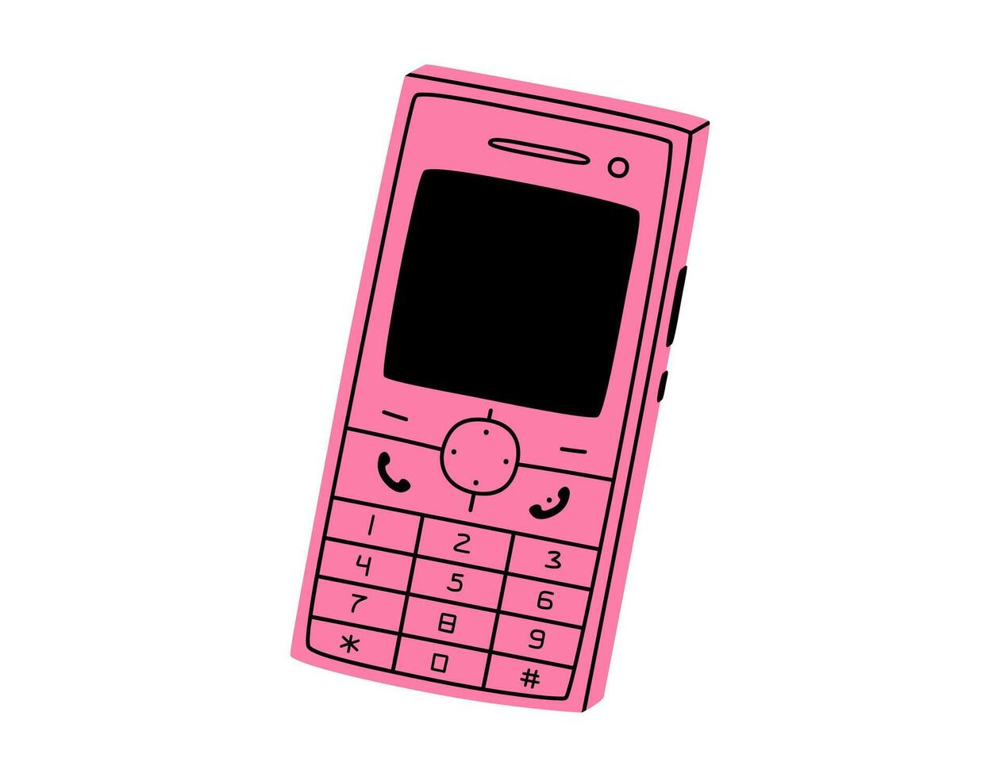
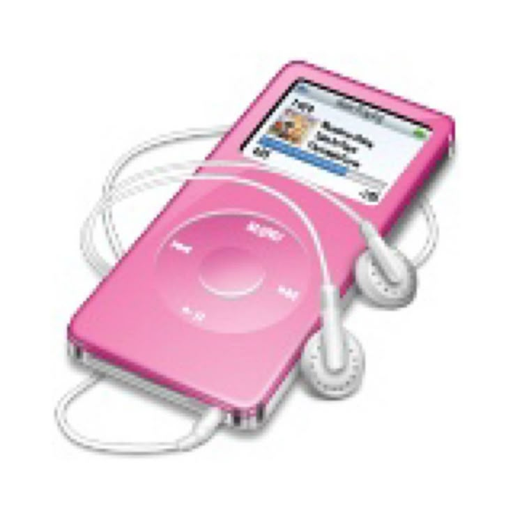
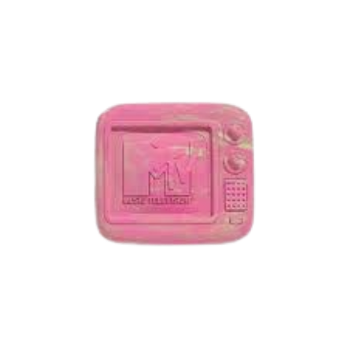
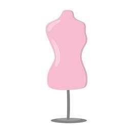
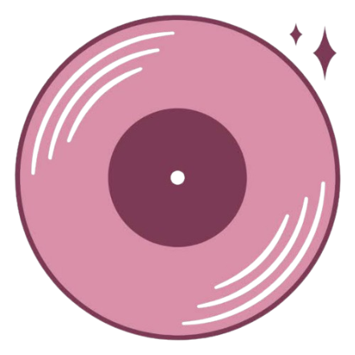

ÍCONES E TENDÊNCIAS
DA CULTURA POP
A ERA Y2K

O início dos anos 2000 marcou uma revolução cultural impulsionada pela música pop e pela cultura MTV.

Telemóveis Flip

iPods e MP3

Era de Ouro da MTV

Cintura Baixa

Boy Bands e Divas Pop
Estética Y2K
Os anos 2000 definiram tendências de moda, música e cultura que continuam influenciando até hoje.